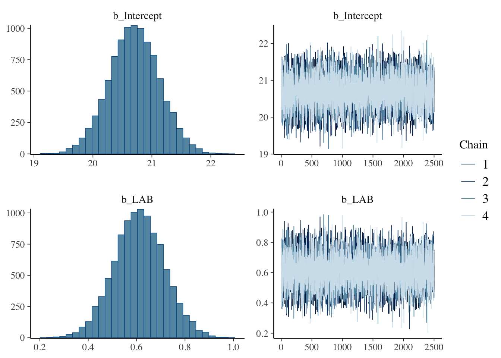
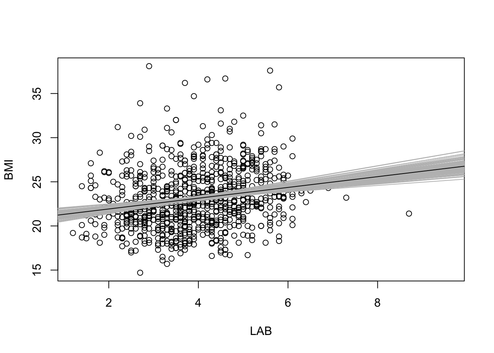
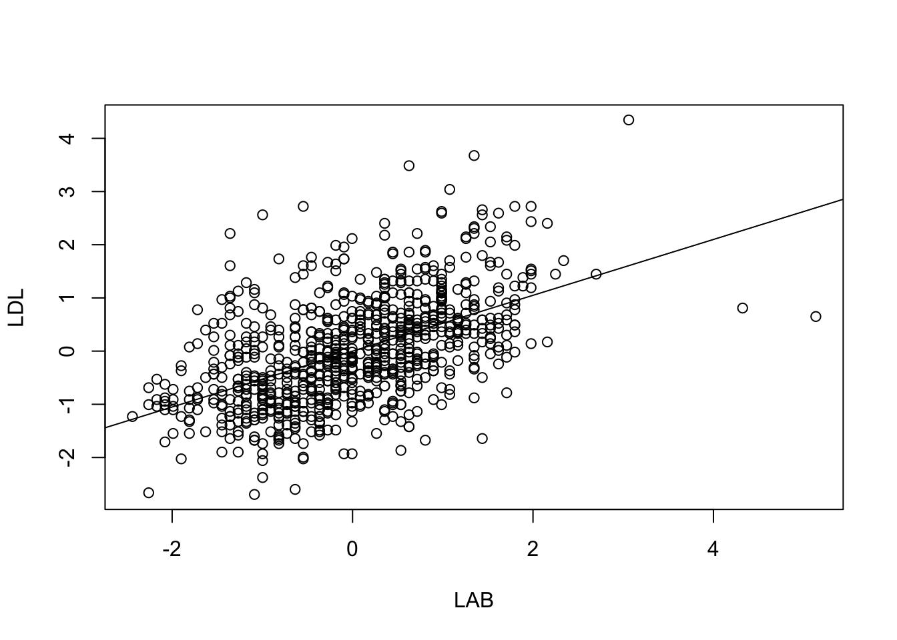
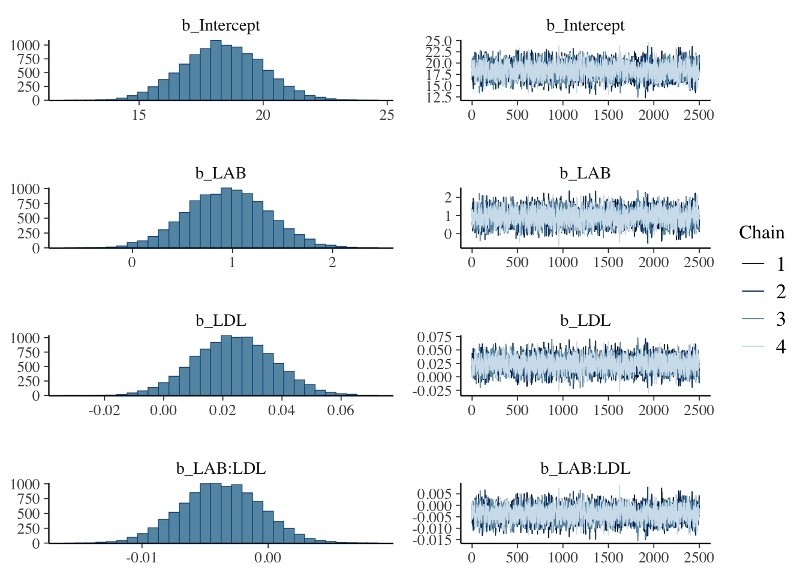
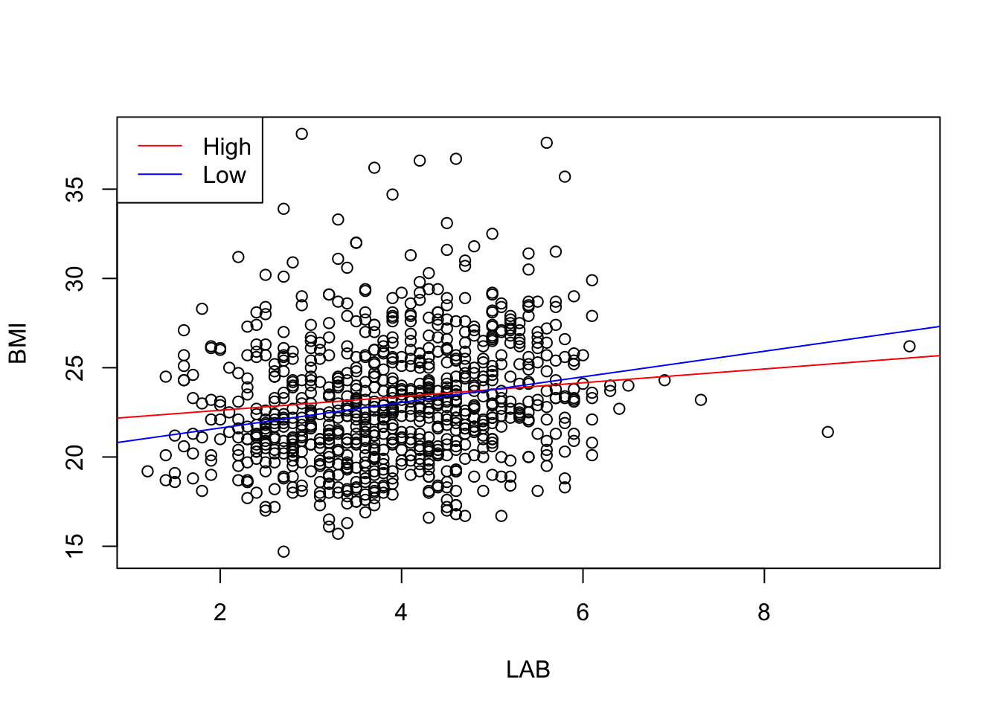
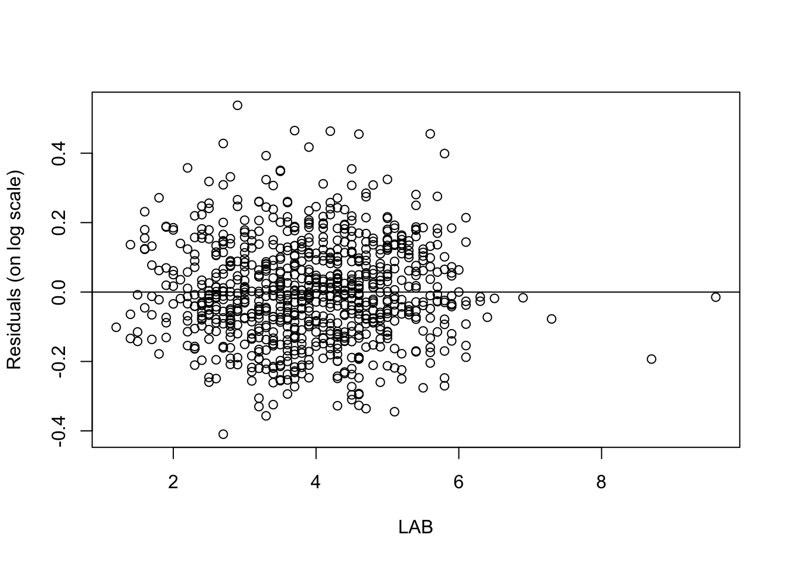
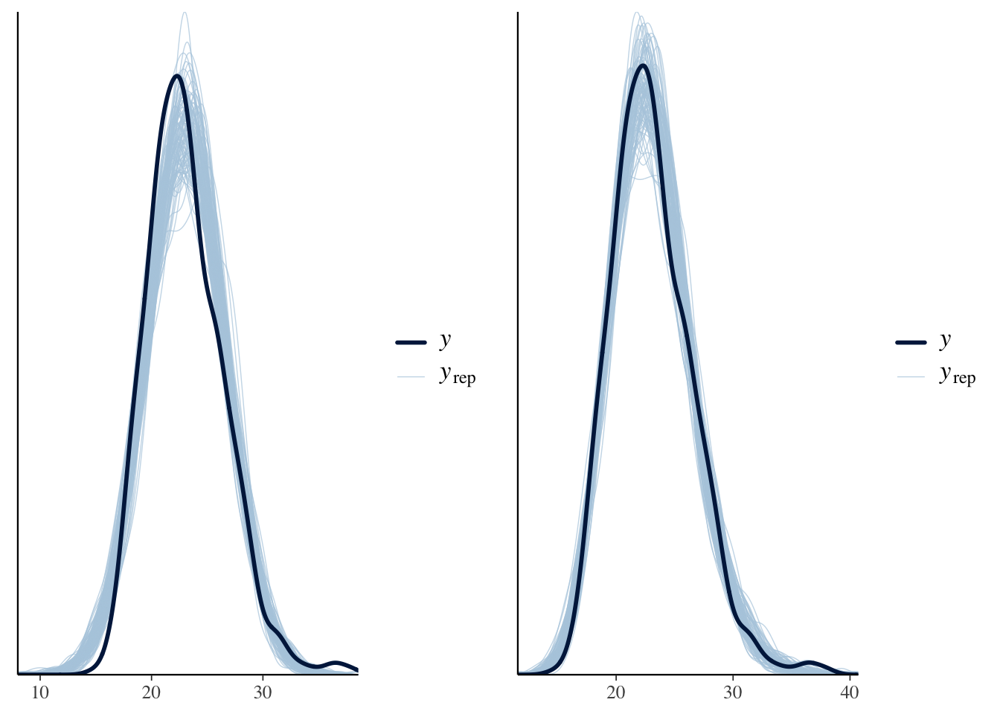
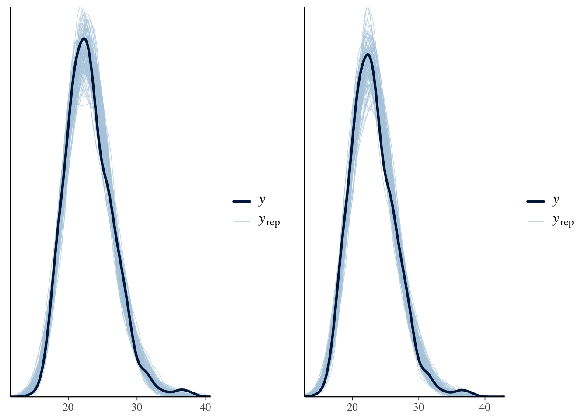

ベイズ分散分析のモデル解析
心理学実験を題材として
2024-09-24
ベイズ重回帰分析は解析者のデータへの理解を促進する強力な探索的データ解析手法である． このことを brms パッケージと BMI データを用いて例証する． １変数の場合から始め，変数を追加して挙動が変わるのを解釈・検証（残差プロット・事後予測プロット）しながら慎重に進んでいく． 交差検証による事後予測スコア elpd を用いて，データの非線型変換を利用することで，非線型な関係を見出す方法を扱う． ここまで行えば，データの階層化やノンパラメトリックな手法の採用などの次のステップが自然と見えてくるだろう．
A Blog Entry on Bayesian Computation by an Applied Mathematician
$$
$$
ベイズ線型回帰分析は多くのデータ解析における「最初の一歩」である．ベイズ回帰分析から始まるベイズのワークフローや，理論的な背景は次稿を参照：
ここではベイズ回帰モデルに変数を増やしていく際の解釈の変化や，変数の選択の問題などの実際的な問題を扱う．
library(readxl)
raw_df <- read_excel(path)最終的には \[ \texttt{BMI} = \beta_0 + \beta_{\texttt{LAB}}\cdot\mathtt{LAB} + \beta_{\texttt{LDL}}\cdot\mathtt{LDL} + \beta_{\texttt{LAB:LDL}}\cdot\mathtt{LAB}\cdot\mathtt{LDL} + \epsilon \] \[ \beta_0\sim\mathrm{t}(3;\mu_0,3.4),\qquad\epsilon\sim\mathrm{N}(0,\sigma^2), \] \[ \beta_{\texttt{LAB}},\beta_{\texttt{LDL}},\beta_{\texttt{LAB:LDL}}\sim\mathrm{N}(0,\infty),\qquad\sigma\sim\mathrm{t}(3;0,3.4), \] という５つのパラメータを持ったモデルを考えるが，ここではまず１つの説明変数 LAB にのみ注目する．
なお，分散パラメータに出てくる \(3.4\) の数字は，被説明変数 BMI の標本分散である：
sqrt(var(raw_df$BMI))[1] 3.471758library(brms)
model1 <- bf(
BMI ~ LAB
)
fit1 <- brm(
formula = model1,
data = raw_df,
chains = 4, iter = 5000, cores = 4
)library(knitr)
kable(get_prior(
formula = model1,
data = raw_df
))| prior | class | coef | group | resp | dpar | nlpar | lb | ub | source |
|---|---|---|---|---|---|---|---|---|---|
| b | default | ||||||||
| b | LAB | default | |||||||
| student_t(3, 22.7, 3.4) | Intercept | default | |||||||
| student_t(3, 0, 3.4) | sigma | 0 | default |
plot(fit1, variable = c("b_Intercept", "b_LAB"))
summary(fit1)$fixed Estimate Est.Error l-95% CI u-95% CI Rhat Bulk_ESS Tail_ESS
Intercept 20.7016164 0.4252379 19.8602962 21.5361855 1.000239 10139.53 7329.774
LAB 0.6106412 0.1044871 0.4069246 0.8194326 1.000457 10303.02 6531.444\(\beta_{\texttt{LAB}}\) の最頻値＝最尤推定量は \(0.6\) である．これは，LAB が \(1\) 違う個人の間で BMI の値が約 \(0.6\) 違うと解釈できる．
例えば LAB が \(3.0\) の個人の予測される BMI は \[ \mathtt{BMI}\approx20.7+0.6\times3.0=22.5 \] となる．
plot(raw_df$LAB, raw_df$BMI, xlab="LAB", ylab="BMI")
abline(summary(fit1)$fixed[1,1], summary(fit1)$fixed[2,1])しかしこの図を見ればわかる通り，LAB は BMI の変動の一部しか説明しておらず，上述ような点推定的な議論にどれほど意味があるかは疑問である．
ベイズ回帰では幅を持って結果を理解できるため，その美点を活かさない理由はない．
plot(raw_df$LAB, raw_df$BMI, xlab="LAB", ylab="BMI")
sims <- as.matrix(fit1)
sims_to_display <- sample(nrow(sims), 100)
for (i in sims_to_display) {
abline(sims[i, 1], sims[i, 2], col = "gray")
}
abline(summary(fit1)$fixed[1,1], summary(fit1)$fixed[2,1])
さらにベイズ模型は事後予測分布をプロットし，実際の観測データと比べることで，モデルがデータ生成過程をどれほど反映できているかが瞬時に把握できる：
synthetic_data <- posterior_predict(fit1, newdata = data.frame(LAB = 3.0), ndraws = 10000)
hist(synthetic_data, nclass = 100, xlab = "BMI", main = "Predicted BMI for a person with LAB = 3.0")
p1 <- pp_check(fit1, ndraws = 100)
p1事後予測分布のプロットを見ると，モデルが取り逃がしている構造として，BMI の分布が左右で非対称であることがあることがわかる．回帰直線のプロット 図 1 を見ても，直線の上側の点の方が裾が広く分散している．
「やせ」と「肥満」は対称ではないのである．
残差をプロットすることでさらに明らかになる：
res <- residuals(fit1)
plot(raw_df$LAB, res[,1], xlab="LAB", ylab="Residuals")
abline(0,0)
ただし，残差と事後予測分布には，標本内のデータを見ているか，標本外のデータを想定しているかという大きな違いがある．
この２つの結果が乖離している場合，モデルが標本に過適合していることを疑う必要がある．具体的には次節 3 参照．
ここに新たな変数 LDL を追加すると，LAB の係数 \(\beta_{\texttt{LAB}}\) は \(0.6\) から \(0.5\) に減少する．これはどういう意味だろうか？
model2 <- update(model1, BMI ~ LAB + LDL)
fit2 <- brm(
formula = model2,
data = raw_df,
chains = 4, iter = 5000, cores = 4
)plot(fit2, variable = c("b_Intercept", "b_LAB", "b_LDL"))一般に係数の追加は層別に当たる．例えばこの結果は，LDL の値が同じ人の中では LAB が \(1\) 違う人の BMI の値が \(0.5\) 違うと解釈できる．
summary(fit2)$fixed Estimate Est.Error l-95% CI u-95% CI Rhat Bulk_ESS
Intercept 20.163355017 0.517973058 1.914440e+01 21.17476148 1.000687 12617.051
LAB 0.483922973 0.124983258 2.390836e-01 0.72708676 1.000109 9080.697
LDL 0.008582008 0.004412872 -8.612193e-05 0.01716285 1.000207 9537.469
Tail_ESS
Intercept 7619.117
LAB 7383.503
LDL 7324.199ここで \(\beta_{\texttt{LDL}}\) の値が極めて小さいことに気づくかもしれない．これは LAB に比べて LDL の影響が小さいことを意味しない．なぜならばこの２つの変数はスケールが約 \(10^2\) 違うためである．LDL は 100 のスケール，LAB は 1 のスケールである．
説明変数 LAB と LDL のどちらが重要か，どっちをモデルに含めるべきかは全く別の方法で議論する必要がある．
係数同士の比較をするためには，説明変数のスケールを揃える必要がある．
そこでデータを正規化してみる：
df <- data.frame(
sBMI = scale(raw_df$BMI),
sLAB = scale(raw_df$LAB),
sLDL = scale(raw_df$LDL)
)
model2s <- bf(sBMI ~ sLAB + sLDL)
fit2s <- brm(
formula = model2s,
data = df,
chains = 4, iter = 5000, cores = 4
)plot(fit2s, variable = c("b_Intercept", "b_sLAB", "b_sLDL"))\(\beta_{\texttt{LDL}}\) の方が \(0\) に近く推定されていることがわかる．
summary(fit2s)$fixed Estimate Est.Error l-95% CI u-95% CI Rhat Bulk_ESS
Intercept 0.0002000558 0.03413500 -0.0678288418 0.06679971 1.000381 10219.138
sLAB 0.1549410096 0.03976303 0.0768082214 0.23239875 1.000207 9432.452
sLDL 0.0773993520 0.03996238 -0.0009089375 0.15622134 1.000184 9099.179
Tail_ESS
Intercept 6757.463
sLAB 7405.609
sLDL 7524.666データを正規化してしまったため，直接的な係数の解釈はできないが，係数を相互に比較できる．
係数の大小を見ることで，LAB の方が有効な説明変数であるように思える．だが元々 LAB は \(0\) から離れた値だったが，LDL を入れた途端にいずれも \(0\) にかぶりかけている．これは２つの間に共線型性が存在するためである．
plot(df$sLAB, df$sLDL, xlab = "LAB", ylab = "LDL")
lm(sLDL ~ sLAB, data = df) %>% abline()
またその他のモデルの性質は変わらない．例えば事後予測分布も変わらない．
library(gridExtra)
p2s <- pp_check(fit2s, ndraws = 100)
p2 <- pp_check(fit2, ndraws = 100)
grid.arrange(p2, p2s, nrow = 1)再び正規化する前のデータに戻る．
model3 <- update(model2, BMI ~ LAB * LDL)
fit3 <- brm(
formula = model3,
data = raw_df,
chains = 4, iter = 5000, cores = 4
)plot(fit3, variable = c("b_Intercept", "b_LAB", "b_LDL", "b_LAB:LDL"))
summary(fit3)$fixed Estimate Est.Error l-95% CI u-95% CI Rhat Bulk_ESS
Intercept 18.359567486 1.602638690 15.239030706 21.511927719 1.000538 3653.578
LAB 0.946655585 0.410287745 0.146005654 1.745291095 1.000150 3690.989
LDL 0.023793589 0.013531229 -0.002859942 0.050046848 1.000415 3761.381
LAB:LDL -0.003753507 0.003173122 -0.009944571 0.002469838 1.000165 3555.572
Tail_ESS
Intercept 4433.506
LAB 4735.780
LDL 4718.947
LAB:LDL 4255.115交差項を含む線型回帰における係数の解釈はさらに限定的になる．
\(\beta_{\texttt{LAB}}\) は LDL が \(0\) である人が仮にいたとした場合の，LAB が \(1\) 違う人の間の BMI の平均的な違いを表す，と解釈できる．（LDL の平均が \(0\) になるように変数変換をして回帰するともっと自然な解釈ができる）．
\(\beta_{\texttt{LAB:LDL}}\) は片方の係数 \(\beta_{\texttt{LAB}}\) を固定した際，LDL が \(1\) だけ違うグループにおける係数 \(\beta_{\texttt{LDL}}\) との違いを表す．
すなわち交差項の追加は，LDL に依って層別し，それぞれのグループに異なる \(\beta_{\texttt{LAB}}\) を推定することを可能にする．この点で階層モデリングに似ている．
交差項 LAB*LDL の追加は，LDL の違うサブグループの間に異なる LAB をフィッティングすることを可能にする．
このことを最もよく見るには，LDL が上半分か下半分かで LAB の係数がどう変わるかを見るのが良い．
raw_df$LDLcate2 <- ifelse(raw_df$LDL > median(raw_df$LDL), "High", "Low")model3_cate <- bf(BMI ~ LAB * LDLcate2)
fit3_cate <- brm(
formula = model3_cate,
data = raw_df,
chains = 4, iter = 5000, cores = 4
)plot(raw_df$LAB, raw_df$BMI, xlab="LAB", ylab="BMI")
b_hat <- summary(fit3_cate)$fixed
abline(b_hat[1,1], b_hat[2,1], col = "red")
abline(b_hat[1,1] + b_hat[3,1], b_hat[2,1] + b_hat[4,1], col = "blue")
legend("topleft", # または "topright", "bottomleft", "bottomright" など
legend = c("High", "Low"),
col = c("red", "blue"),
lty = 1)
LDL が大きいと，LAB の BMI に与える影響は緩やかになることがわかる．LDL の方が LAB の代わりに BMI の増加を説明してしまっているとも考えられる．
残差プロットや事後予測プロットによるモデルの検証は，解析と並行して見てきた．
ここではより詳細に，モデルの予測性能に基づいた検証・比較方法を見る．
交差検証法によるスコア elpd_loo によるモデル比較が一つ推奨される．
図 1 の回帰直線のプロットと 図 2 の残差プロットを見ると，残差がまだ構造を持っていることがわかる．
res <- residuals(fit3)
plot(raw_df$LAB, res[,1], xlab="LAB", ylab="Residuals")
abline(0,0)この残差は標本分散 \(\widehat{\sigma}^2\)
sigma <- sqrt(var(res)[1,1])
print(sigma)[1] 3.394462を持っている．
ひとまず LAB と LDL について回帰をすることで，データの変動がどれほど説明できたかを考えてみよう．
\[ R^2:=1-\frac{\widehat{\sigma}^2}{s_y^2}=\frac{s_y^2-\widehat{\sigma}^2}{s_y^2} \]
という値は 決定係数 と呼ばれ，データ \(y\) の分散 \(s_y^2\) のうち「説明された分散」の割合を表す．1
1-sigma^2/var(raw_df$BMI)[1] 0.04403279データの変動の \(4\%\) しか説明できていないことがわかる．
ベイズ決定係数 (Andrew Gelman and Vehtari, 2019) は brms パッケージで次のように計算できる：
bayes_R2(fit3) Estimate Est.Error Q2.5 Q97.5
R2 0.04734955 0.01373743 0.02254274 0.07643401以上の \(R^2\) の議論では係数を点推定して「残差」を議論していたが，モデルのパラメータ（の関数）である以上，ベイズ推定することもできる．
ベイズ決定係数（の事後予測値）は，事後予測分布からのサンプルを用いて複数回予測値 \(\widehat{y}_i\) を計算し， \[ R^2_{\texttt{Bayes}}:=\frac{\mathrm{V}[\widehat{y}]}{\mathrm{V}[\widehat{y}]+\sigma^2} \] という値で「データの変動のうち説明された割合」を表す．
(Akaike, 1974) は次のように定義される： \[ \mathtt{AIC}=-2\biggr(\sup_\theta\log p(y|\theta)\biggl)+2p. \]
第１項は deviance とも呼ばれ，残差を表す．
AIC は新たなデータ点が観測された際の，そのデータ点に対するデビアンス（ある種の損失）の推定量となっており，小さいほどよい．
AIC と同様の推定を，計算機集約的に行う方法に次節の交差検証法がある：
事後予測検証では事後分布と観測を比較したが，よりこの好ましくは新しい（推定に用いていない）データと突き合わせることである．
LOO (Leave-One-Out) 交差検証 (Stone, 1974) では，データを１つだけ抜いてモデルを推定し，このモデルの予測値と実際の値を比較するモデル検証法である．
brms パッケージでは loo パッケージ を内部で利用して高速に計算することができる．
loo(fit3)
Computed from 10000 by 839 log-likelihood matrix.
Estimate SE
elpd_loo -2220.7 26.7
p_loo 5.6 0.7
looic 4441.4 53.5
------
MCSE of elpd_loo is 0.0.
MCSE and ESS estimates assume MCMC draws (r_eff in [0.4, 1.0]).
All Pareto k estimates are good (k < 0.7).
See help('pareto-k-diagnostic') for details.回帰分析において予測値と実際の（省いていた）データの乖離は，AIC を踏襲して事後予測分布のスコア関数で測る (Vehtari et al., 2017, p. 1414)．
elpd (expected log predictive density) は，LOO 交差検証により得る，（省いていた）データの対数尤度の平均である： \[ \mathrm{elpd}_{\text{loo}}:=\sum_{i=1}^n\log p(y_i|y_{-i})=\sum_{i=1}^n\int p(y_i|\theta)p(\theta|y_{-i})\,d\theta. \tag{1}\]
この値が大きいほどモデルの予測が良い．一般に elpd は，一度見たことあるデータ点に対する事後予測スコアよりも低くなる．2 この際の差は p_loo が測っており，乖離が大きすぎるとモデルがデータに過適合していることを表す．
p_loo は有効パラメータ数の（一致）推定量である．今回のモデルには切片項と LAB, LDL, LAB:LDL そして sigma の５つのパラメータがあるが，それより \(0.6\) だけ大きい値が出ている．
最後の列は情報量規準のスケールにしたものである： \[ \mathtt{looic}=-2\times\mathrm{elpd}_{\text{loo}}. \]
一般に LOO-CV は計算が大変であるが，loo パッケージは Pareto Smoothed Importance Sampling (PSIS) (Vehtari et al., 2024) を用いて高速に計算している．
\(k>0.7\) の場合はこれがうまくいっていないことを示唆する．この下で \(\mathtt{p_loo}>p\) はモデルの誤特定を示唆する．
brms パッケージでは loo_compare 関数で２つのモデルの elpd スコアを比較できる：
loo_compare(loo(fit1), loo(fit2)) elpd_diff se_diff
fit2 0.0 0.0
fit1 -0.7 2.1 elpd_diff の値は標準偏差と比べて大変に小さい．交差検証の観点からは，LDL の追加は BMI の予測の観点から全く違いがないことがわかる．
この elpd を基本としたモデルの比較は極めて強力である．
線型モデルが適切な場合，適切な説明変数を新たに作ったり，不要な説明変数を除去して推定を安定化させることで，最適な予測力を持つ線型モデルが特定できる．
(Gelman et al., 2020, p. 206) などの解析例も参照．
その際に elpd は，事後予測分布のプロットを見るという視覚的な方法よりも定量的な指標として大活躍することになる．
しかし時には線型性の仮定が不適切であるという仮説・結論に行き着く場合もある．
LAB による BMI への回帰の残差には，左右の非対称性が見られる 2.2．
そして更なる変数 LDL の追加は予測の観点では特に影響がないことがわかった 3.6．
そこでここでは手軽に非線型性を取り入れる方法として，データを変換することを考える．
第 2.4 節でデータを標準化すると回帰モデルの係数の解釈が容易になることみた．
しかしデータの線型変換は線型回帰モデルを変えず，推定には何の影響も与えない．
そこでここでは非線型な変換に注目する．
線型回帰モデリングにおける最大の仮定は，説明変数の加法性と，\(y\) への効果の線型性である： \[ y=\beta_0+\beta_1x_1+\beta_2x_2+\cdots. \]
LAB や LDL の BMI への影響が線型であると見るのは相当横暴な仮定である．LAB と LDL が両方高いことが相乗的に BMI を高めるシナリオの方があり得そうである．
BMI も LAB も LDL も正の値しか取らないこともあり，対数変換を考えることは良い第一歩だろう．
model1_log <- update(model1, log(BMI) ~ LAB)
fit1_log <- brm(
formula = model1_log,
data = raw_df,
chains = 4, iter = 5000, cores = 4
)res <- residuals(fit1_log)
plot(raw_df$LAB, res[,1], xlab="LAB", ylab="Residuals (on log scale)")
abline(0,0)
残差プロットを見ると，元のスケールでの線型回帰 図 2 と比べて非対称性は軽減している．
library(bayesplot)yrep <- posterior_predict(fit1_log, ndraws = 100)
p1_log <- ppc_dens_overlay(raw_df$BMI, exp(yrep))
grid.arrange(p1, p1_log, nrow=1)
事後予測分布も改善しているのがわかる．
ただし，説明変数を対数スケールに変換してしまったので，直接 LOO スコアを比較することはできないことに注意する：
loo_fit1 <- loo(fit1)
loo_fit1_log <- loo(fit1_log)
loo_compare(loo_fit1, loo_fit1_log)Warning: Not all models have the same y variable. ('yhash' attributes do not
match) elpd_diff se_diff
fit1_log 0.0 0.0
fit1 -2656.8 8.2実際，fit1 の elpd が \(-2211\) であるのに対し，fit1_log は \(426\) とスケールが全く違う：
loo_fit1_log
Computed from 10000 by 839 log-likelihood matrix.
Estimate SE
elpd_loo 435.6 21.8
p_loo 3.0 0.3
looic -871.3 43.6
------
MCSE of elpd_loo is 0.0.
MCSE and ESS estimates assume MCMC draws (r_eff in [0.6, 1.1]).
All Pareto k estimates are good (k < 0.7).
See help('pareto-k-diagnostic') for details.しかし elpd の定義 (1) を見ると，\(y_i\) の密度変換をするために，Jacobian の値を加えれば良いことがわかる．
それぞれの項は loo(fit1_log)$pointwise[,1] に格納されている：
sum(loo_fit1_log$pointwise[,1])[1] 435.6273loo_fit1_Jacobian <- loo_fit1_log
loo_fit1_Jacobian$pointwise[,1] <- loo_fit1_log$pointwise[,1] - log(raw_df$BMI)
sum(loo_fit1_Jacobian$pointwise[,1])[1] -2189.131loo_compare(loo_fit1_Jacobian, loo_fit1)Warning: Not all models have the same y variable. ('yhash' attributes do not
match) elpd_diff se_diff
fit1_log 0.0 0.0
fit1 -32.0 6.7 被説明変数に対数変換を施すことで，モデルの予測性能が改善したことがわかる．
同様に説明変数にも対数変換を施すことができる．
model1_loglog <- update(model1_log, log(BMI) ~ log(LAB))
fit1_loglog <- brm(
formula = model1_loglog,
data = raw_df,
chains = 4, iter = 5000, cores = 4
)yrep <- posterior_predict(fit1_loglog, ndraws = 100)
p1_loglog <- ppc_dens_overlay(raw_df$BMI, exp(yrep))
grid.arrange(p1_log, p1_loglog, nrow=1)
予測性能はわずかに悪化していることがわかる：
loo_compare(loo(fit1_log), loo(fit1_loglog)) elpd_diff se_diff
fit1_log 0.0 0.0
fit1_loglog -1.8 1.1 median(loo_R2(fit1_log))[1] 0.02481491median(loo_R2(fit1_loglog))[1] 0.02229489しかし log-log モデルの係数は弾力性 (elasticity) としての解釈ができることもあり，解釈性の観点から選好されることがある (Gelman et al., 2020, p. 195)．
離散変数の扱いは連続変数よりも難しくなる．基本的に一般化線型モデルの枠組みが必要になる．
しかし連続変数間の関数関係が複雑だと思われる場合，ノンパラメトリック手法を求める前に，変数を離散化して解析することも得るものが大きい場合が多い．
このような設定は，離散変数を扱う積極的な理由になる．非線型性を扱うために設定を簡略化するのである．
BMI を LAB と LDL から予測する問題を，線型回帰モデルから始めた．
交差項を追加することで，LDL が違う群に対して LAB がどう変わるかの層別の違いを見ることができる．
事後予測分布によるモデルのチェックは残差プロットと同様に，極めて手軽かつ有力なモデル検証の方法である．
これにより関数関係の非線型性が疑われたため，被説明変数 BMI に対して対数変換を施して線型回帰をすると，予測性能の改善が見られた．
事後予測分布のプロットだけでなく，その「よさ」の定量的な指標として交差検証による事後予測スコア elpd (Vehtari et al., 2017) があることを学んだ．
(10 節 Gelman et al., 2020) に線型重回帰モデルにおいて，係数の解釈法が丁寧に解説されている．
(11 節 Gelman et al., 2020) はモデルの検証法を扱っている．
(Gelman et al., 2020) では基本的に rstanarm パッケージを用いているが，本稿では brms パッケージを用いた．
決定係数は，回帰が OLS 推定量により推定された場合には \(Y\) と説明変数のベクトル \(X\) との間の 重相関係数 とも一致する (Mudholkar, 2014)．(Gelman et al., 2020, p. 168) も参照．一般に決定係数は母集団の多重相関係数の一致推定量だと見れる．こうみた場合のバイアスを低減・脱離した値に，自由度調整済み決定係数，(Olkin and Pratt, 1958) 推定量などが存在する．↩︎
訓練に用いたデータ点に関する事後予測スコアはdeviance と関係があり，\(-2\) を乗じたものは deviance と同じスケールになる (Gelman et al., 2020, p. 174), (Vehtari et al., 2017, p. 1427)．AIC は deviance から \(2p\) を引いたものである (Gelman et al., 2020, p. 175)．↩︎